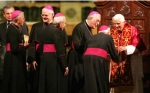

Duas crônicas e uma notícia para o fim de semana:
1- O papa em destaque
Bento XVI é um erudito, isso é incontestável. Conhece a História da Igreja como poucos. Toca piano. É apaixonado por música clássica. É um leitor incansável, mas isso não significa que devamos concordar cegamente com todas as idéias que expressa. Quando leio na “Folha” a manchete: “Papa apóia excomunhão dos políticos pró-aborto”, percebo que ele decreta uma sentença praticamente mortal. Essa sua maneira de se colocar nos remete aos tempos da Inquisição. Metaforicamente, representa algo como lançar à fogueira os infiéis.
É claro que eu não espero que este ou qualquer outro papa tenha idéias conectadas só com o nosso tempo, esquecendo as doutrinas, os dogmas, a tradição. Seria artificial , mas também não posso aceitar sem questionar a idéia de excomungar os que forem a favor da legalização do aborto.
Em tese, sou completamente contra o aborto. Mas há a realidade que não pode ser esquecida. E é essa realidade injusta que leva mulheres que não tiveram acesso à educação e a anticoncepcionais a morrer em clínicas de fundo de quintal, sem a mínima higiene. Há estatísticas que afirmam que morrem no Brasil de três a quatro mulheres a cada dia por esse motivo. Legalizar o aborto não significa liberá-lo em quaisquer circunstâncias, mas permitir que uma adolescente que sofre estupro, muitas vezes do próprio padrasto, possa escolher não gerar aquela criança fruto de violência.
Adolescentes de 13, 14 anos, sem a mínima estrutura para assumir a maternidade, vítimas da perversidade social, são criminosas quando recorrem a essa decisão extrema? A sociedade deve utilizar todos os recursos para evitar o aborto, estimulando a adoção, mas simplesmente excomungar políticos que o defendem é uma atitude implacável e contraditória.
A contradição reside no fato de a Igreja também ser contra o uso de preservativos. É irreal acreditar que a maioria dos católicos adolescentes irá adotar a castidade para evitar doenças sexualmente transmissíveis e a gravidez.
O Papa Bento XVI precisa dialogar com a Igreja histórica e com a Igreja na atualidade, em um país de tantas carências como o nosso. Ao mesmo tempo em que ele critica duramente com toda razão os países ricos que oprimem os países pobres, ele condena a Teologia da Libertação e a forma como ela conduz o seu trabalho social .O Papa deve ser bem recebido, como está sendo, mas não consigo deixar de questionar e de criticar algumas posições tomadas por ele.
Jaime Leitão - Publicado em 12.05.2007
Fonte:
www.duplipensar.net/artigos
2 - George W. Bush e o Papa Bento XVI: a politização de Deus:
Como o cardeal Ratzinger, hoje Papa Bento XVI , ajudou George W. Bush, um protestante fundamentalista, a vencer as eleições contra um senador católico
(...)
A jornada para a vida eterna inicia-se nas calçadas históricas de Roma, em peregrinações de fé mostradas na televisão; o desvio em direção ao poder percorre auto-estradas do Texas, em operações sigilosas, onde a mensagem de Cristo é reduzida a veículo eleitoral, e a salvação da alma é uma questão de filiação partidária.
Depois de receber uma descompostura pública do Papa João Paulo II., por causa da guerra do Iraque, o Presidente Bush, por iniciativa de seu conselheiro político, Karl Rove, aproximou-se da Santa Sé para lembrar que, apesar da guerra, Bush estava na linha de frente do combate à eutanásia, ao aborto, e, a uma tendência cultural que tem acumulado vapor nos Estados Unidos e no Canadá recentemente, o casamento gay. Àquela altura as pesquisas de opinião revelavam um empate entre Bush e Kerry. Se reeleito, Rove ponderou, o Presidente da única super potência do planeta, George W. Bush, seria um poderoso aliado do Vaticano na luta pela preservação dos rigores mais tradicionais da igreja. Quem sabe poderia ajudá-la a resgatar o vigor antigo, severamente corroído pela turbulência dos anos sessenta, protestos estudantis, o movimento hippie, a integração da mulher no mercado de trabalho.
O então Cardeal Joseph Ratzinger comprou o argumento de Karl Rove.
(...)
A América Latina católica—o Brasil, a maior população católica do mundo— recebeu um cala-boca do clube de cardeais que selecionam o Papa. No entender do Cardeal Ratzinger, ou Bento XVI, a teologia da libertação era o marxismo de batina, parecer adotado pelo Papa João Paulo II, de quem era o braço direito. Para ele rock é um veículo da antireligião; o feminismo uma ameaça à família; homossexualismo uma perversão.
Nesses pontos de vistas, o Presidente Bush reza pela mesma cartilha do novo Papa. O que os separa é a pena de morte.
Numa postura claramente sectarista afirmou, em entrevista a um jornal europeu, que o ingresso da Turquia na União Européia deveria ser vetado por que a Turquia é um país de população predomidantemente muçulmana, portanto incompatível com a “cultura cristã européia”.
O Presidente George W. e o Papa Bento XVI apresentam-se como santos guerreiros unidos contra o dragão da maldade: a apatia religiosa reinante na Europa, os anseios dos católicos das Américas por reformas, o feminismo, bichas, divórcio.
Qualquer semelhança com o Taliban já não é mera coincidência.
Embora contemple um presente adverso, com missas melancolicamente esvaziadas e uma escasses crônica de seminaristas, o Colegiado de Cardeais elegeu um teólogo do passado, beirando os oitenta, cuja prioridade é proteger a igreja das influências da cultura contemporânea. É a igreja comanda por uma gerontocracia reacionária, que só faz se afasta de suas ovelhas. Nenhum desdém aos idosos, acumuladores de sabedoria nos trilhos do trem do tempo, mas sem renovação de liderança, as idéias apodrecem e morrem. Os números contam uma história de encolhimento e descontinuação pertinente ao que tento dizer: 40 anos atrás, 1 575 padres foram ordenados; no ano 2002, apenas 450. O número de seminários caiu de 50 000, em 1965, para 4 700, em 2002. A Praça de São Pedro fervilha com o entusiasmo e a emoção dos fieis católicos, e cria a ilusão ótica que a igreja está no pique de sua popularidade.
A participação da Igreja Católica na campanha para eleger George Bush é um vale-tudo espiritual em que os fins justificam as alianças, mesmo um pacto com um império arrogante comandado por um belicista de Q.I baixo.
O Presidente Bush pode interromper suas férias para salvar Terry Schiavo, mas é pouco provável que ajude a salvar a igreja de sua letargia atual. A juventude européia simplesmente não tem estômago para as motivações do Presidente Americano, menos ainda a América Latina.
Parece-me que o desafio equivocado do novo Papa na metade da primeira década do novo milênio é se interpor entre homens que se beijam, calar a música do U2, intrometer-se em úteros alheios, enquanto as verdades manifestas com todo zelo e ênfase pelo Filho de Deus, justiça social, tolerância, amor ao próximo, perdão, diluem-se na histeria da multidão ante o anúncio solene, a fumaça branca, os sinos produzindo o eco de um passado sombrio, dito em uma língua morta: “habemus papum”, "habemus papum".
Joe Rocha Rangel - Publicado em 03.05.2005
Fonte:
www.duplipensar.net/artigos
3 - Notícia:

Aos bispos, Papa critica seitas, divórcio e 'desvios sexuais' na Igreja
Discurso no Catedral da Sé teve também tom disciplinador, de mensagem interna.
Papa afirmou que Igreja que não pode se contaminar por ideologias.
Diante de uma platéia formada por 400 bispos, reunidos na Catedral da Sé, no Centro de São Paulo, o Papa Bento XVI fez o discurso mais incisivo desde o início da visita ao Brasil. Na fala do pontífice, sobraram mensagens duras aos católicos, aos quais o Papa pediu o combate à "ferida do divórcio" e cuidado para evitar "desvios sexuais" no interior do clero. Seitas cristãs também foram mencionadas, e duas vezes criticadas, pelo que o líder da Igreja Católica chamou de abordagem "agressiva" na busca de novos fiéis.
Fonte:
g1.globo.com/Noticias/PapanoBrasil